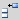
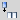

2.3.8.6. Tables
Insert / edit table
Proceed as follows to insert a new table or to edit an existing table:
- To insert a new table, place the cursor at the position where the table shall be inserted. To edit an existing table select the table by placing the cursor within the table or by clicking on the border of the table.
- Click the "Insert/edit table" button. This opens following dialog:
Figure 2.3.66. Insert / edit table dialog
- Enter the number of columns and rows.
- Optionally enter the following values in the "General" tab:
Cellpadding:
Enter the number of pixels for cellpadding. The padding will be applied to all cells of the table.
Enter the number of pixels for cellpadding. The padding will be applied to all cells of the table.
Cellspacing:
Enter the number of pixels for cellspacing. The spacing will be applied to all cells of the table. Currently the cellspacing is only supported for HTML output. For PDF output the cellspacing will always be zero.
Enter the number of pixels for cellspacing. The spacing will be applied to all cells of the table. Currently the cellspacing is only supported for HTML output. For PDF output the cellspacing will always be zero.
Alignment:
Select an alignment value from the list:
Select an alignment value from the list:
- Select "Center" to center the table (horizontally).
- Select "Left", to left-align the table and let the following text float around the table on its right-side.
- Select "Right", to right-align the table and let the following text float around the table on its left-side.
If the alignment is set to "Left" or "Right", some space is inserted between the table and the content that floats around the table. To change the default spacing for left-aligned tables, change the margin-values of the block-style "float_left". Accordingly, to change the default spacing for right-aligned tables, change the margin-values of the block-style "float_right". For more information see the description of the pre-defined block-styles "float_left" and "float_right" in Section 2.4.2, “Pre-defined styles”. Note that these styles also define the floating space for left-/right-aligned images.
Note:
Currently, the table alignment is not supported for print-output. In other words, for PDF export, a table is always left-aligned, no matter what alignment value has been set for this table. However, a table can be indented for PDF export. To do this, select a style with the required margin-values as table class. See the description of the input-field "Class" below.
Border:
Enter the border-width in pixels. The value "0" means no border. The border width will only affect the outer frame of the table. The default width of inner borders, can be controlled by the block-style "table_cell" (see Section 2.4.2, “Pre-defined styles”).
Enter the border-width in pixels. The value "0" means no border. The border width will only affect the outer frame of the table. The default width of inner borders, can be controlled by the block-style "table_cell" (see Section 2.4.2, “Pre-defined styles”).
Width:
Enter the width of the table in pixels (e.g. "150") or in percentage (e.g. "80%").
Enter the width of the table in pixels (e.g. "150") or in percentage (e.g. "80%").
If no value is supplied, then for HTML output the width will be determined by the content, whereas for PDF output the width will be the complete width of the block (e.g. paragraph). Therefore, to have the same layout for HTML and PDF it is recommended to always supply a value for the table-width.
Height:
Enter the height of the table in pixels. Currently the table-height is only supported for HTML output. If no value is given, then the table-height is determined by the content of the cells. For PDF output the table-height is always determined by the content of the cells (nevertheless, it is possible to increase the height of rows by inserting empty paragraphs).
Enter the height of the table in pixels. Currently the table-height is only supported for HTML output. If no value is given, then the table-height is determined by the content of the cells. For PDF output the table-height is always determined by the content of the cells (nevertheless, it is possible to increase the height of rows by inserting empty paragraphs).
Class:
Select a style-ID as table class. The selected style is then applied to the table (including the table caption if existent). Following pre-defined styles can be used to create indented and landscape tables:
Select a style-ID as table class. The selected style is then applied to the table (including the table caption if existent). Following pre-defined styles can be used to create indented and landscape tables:
- Indented tables:
To indent a table, select one of the indent-levelX classes, where X is the indention level. - Landscape tables:
To create a landscape table, select the landscape_table style. If the style landscape_table does not exist, then create a new block-style with ID "landscape_table" (see Section 2.4.3, “Creating a user-defined style”). It's not required to assign any CSS properties to the landscape_table style, because this is a pseudo-style, which just changes the orientation of a table for print-output.
Table caption:
Check the "Table Caption" box to add a title-line to the table. After insertion/update of the table, the title-line is displayed as a separate line before or after the table. In the exported publication, the title includes an automatically generated table number (e.g. if the first table in the publication has the title "My table", then the title in the publication will be "Table 1: My Table"). Whether the title is placed before or after the table can be set in the output configuration (see Section 2.6.2.1.1, “General output settings”).
Check the "Table Caption" box to add a title-line to the table. After insertion/update of the table, the title-line is displayed as a separate line before or after the table. In the exported publication, the title includes an automatically generated table number (e.g. if the first table in the publication has the title "My table", then the title in the publication will be "Table 1: My Table"). Whether the title is placed before or after the table can be set in the output configuration (see Section 2.6.2.1.1, “General output settings”).
Note:
The table caption has to be activated for all tables that need to be referenced from within a paragraph. To be able to reference a table, you also have to supply a table-identifier (see the description of the input-field "Id" below). For an introduction on how to reference a table see "Referencing images and tables" in the tutorial.
Allow page break in table:
By default page-breaks are not allowed within tables. This means, if the height of the table is larger than the remaining space on the current page, then by default the table will be moved to the next page. This also means that if the height of a table is larger than the height of a complete page, the table will be cut off at the bottom of the page. To avoid this, you can allow page-breaks within a table by checking this box.
By default page-breaks are not allowed within tables. This means, if the height of the table is larger than the remaining space on the current page, then by default the table will be moved to the next page. This also means that if the height of a table is larger than the height of a complete page, the table will be cut off at the bottom of the page. To avoid this, you can allow page-breaks within a table by checking this box.
- Optionally enter the following values in the "Advanced" tab:
Id:
Enter a unique identifier for the table. The Id value can then be used to create an internal link to this table. For an introduction on how to reference a table see Section 1.4.2, “Referencing images and tables”.
Enter a unique identifier for the table. The Id value can then be used to create an internal link to this table. For an introduction on how to reference a table see Section 1.4.2, “Referencing images and tables”.
Frame:
The frame property defines which borders of the outer table frame will get a border line. If borders are activated (see border property), then by default all sides of the table will get a border line. This default behaviour can be changed by selecting one of the following "Frame" values:
The frame property defines which borders of the outer table frame will get a border line. If borders are activated (see border property), then by default all sides of the table will get a border line. This default behaviour can be changed by selecting one of the following "Frame" values:
| Value | Description |
|---|---|
| void | No border lines at all. |
| above | Only one border line at the top of the table. |
| below | Only one border line at the bottom of the table. |
| hsides | Only the horizontal border lines, i.e. at the top and at the bottom of the table. |
| lhs | Only one border line at the left-hand side. |
| rhs | Only one border line at the right-hand side. |
| vsides | Only the vertical border lines, i.e. at the left- and right-hand side. |
| box, border | All four sides of the table (same as the default). |
Rules:
The rules property defines which inner borders will get a border line. If borders are activated (see border property), then by default all inner border lines will be visible. This default behaviour can be changed by selecting one of the following "Rules" values:
The rules property defines which inner borders will get a border line. If borders are activated (see border property), then by default all inner border lines will be visible. This default behaviour can be changed by selecting one of the following "Rules" values:
| Value | Description |
|---|---|
| none | No inner border lines at all. |
| rows | Show only the horizontal row lines. |
| cols | Show only the vertical column lines. |
| groups | Show only border lines of grouped cells. |
| all | Show all inner border lines. |
Border color:
Select a border color for the outer frame of the table. If you do not supply a border color in the "table_cell" block-style, then this color will also be used for the inner borders of the table.
Select a border color for the outer frame of the table. If you do not supply a border color in the "table_cell" block-style, then this color will also be used for the inner borders of the table.
Background color:
Select a default background color for the complete table. The default background color can be overwritten by supplying a different color for single rows or cells.
Select a default background color for the complete table. The default background color can be overwritten by supplying a different color for single rows or cells.
- Click the "Update" or "Insert" button to close the dialog. If a table was selected, then the table is updated to reflect the supplied settings. Otherwise a new table is inserted at the current cursor position..
Table row properties
Proceed as follows to update the properties of
- a selected row, or
- all rows, or
- all odd rows, or
- all even rows
of a table:
- Select a table row by placing the cursor in one of the row's cells.
- Click the "Table row properties" button.
- Set the row properties in the "General tab":
Row in table part:
Select whether the row shall be placed in the body part, head part or foot part of the table. By default rows are placed in the body part. Whether a row is placed in the body part, head part or foot part of a table will have no impact on the formatting of the contents. Nevertheless, it will be stored as semantic information. The formatting of the row can be controlled by the class property (see below).
Select whether the row shall be placed in the body part, head part or foot part of the table. By default rows are placed in the body part. Whether a row is placed in the body part, head part or foot part of a table will have no impact on the formatting of the contents. Nevertheless, it will be stored as semantic information. The formatting of the row can be controlled by the class property (see below).
Alignment:
Select whether the content within the cells shall be centered, left-aligned or right-aligned.
Select whether the content within the cells shall be centered, left-aligned or right-aligned.
Vertical alignment:
Select whether the content within a cell shall be centered, top-aligned or bottom-aligned. This setting will only have effect when the height of the content is smaller than the height of the row.
Select whether the content within a cell shall be centered, top-aligned or bottom-aligned. This setting will only have effect when the height of the content is smaller than the height of the row.
Class:
Select a style class to define the formatting for the complete row.
Select a style class to define the formatting for the complete row.
Height:
Enter the height of the row in pixels. Currently the row-height is only supported for HTML output (i.e. for PDF output the height is always determined by the content). Alternatively the height of a row can also be increased by including line breaks or empty paragraphs in the content of a row cell.
Enter the height of the row in pixels. Currently the row-height is only supported for HTML output (i.e. for PDF output the height is always determined by the content). Alternatively the height of a row can also be increased by including line breaks or empty paragraphs in the content of a row cell.
- Optionally set the row properties in the "Advanced" tab:
Background color:
Select the background color that shall be applied to all cells within the row.
Select the background color that shall be applied to all cells within the row.
- Select whether the changes shall be applied only to the current row (cursor position), to all odd rows, to all even rows or to all rows of the table, by selecting the corresponding value from the selection list above the "Update" button.
- Click the "Update" button to close the dialog and to apply the changes to the table row(s).
Proceed as follows to update the properties of
- a single cell, or
- all cells in the row, or
- all cells in the table.
- Select a table cell by placing the cursor in the cell.
- Click the "Table cell properties"
 button.
button. - Set the cell properties in the "General tab":
Alignment:
Select whether the content in the cell shall be centered, left-aligned or right-aligned.
Select whether the content in the cell shall be centered, left-aligned or right-aligned.
Cell type:
Select the type of the cell. By default the type of a cell is "Data". Change the type of a cell to "Header" for cells which represent header fields (e.g. contain the title of a column). The formatting of a "Data" cell is determined by the block-style with ID "table_cell". The formatting of a "Header" cell is determined by the block-style with ID "table_header". See Chapter 2.4, Styles workspace for more information on defining block styles.
Select the type of the cell. By default the type of a cell is "Data". Change the type of a cell to "Header" for cells which represent header fields (e.g. contain the title of a column). The formatting of a "Data" cell is determined by the block-style with ID "table_cell". The formatting of a "Header" cell is determined by the block-style with ID "table_header". See Chapter 2.4, Styles workspace for more information on defining block styles.
Vertical alignment:
Select whether the content within the cell shall be centered, top-aligned or bottom-aligned. This setting will only have effect when the height of the content is smaller than the height of the cell.
Select whether the content within the cell shall be centered, top-aligned or bottom-aligned. This setting will only have effect when the height of the content is smaller than the height of the cell.
Scope:
Defines for which remaining rows or columns the current cell has the notion of a header. This is useful for interactive media which support voice output. For print output this property has no effect.
Defines for which remaining rows or columns the current cell has the notion of a header. This is useful for interactive media which support voice output. For print output this property has no effect.
Width:
Enter the width of the cell in pixels (e.g. "100") or percentage (e.g. "15%").
Enter the width of the cell in pixels (e.g. "100") or percentage (e.g. "15%").
Height:
Enter the height of the cell in pixels (e.g. "50"). Currently this property is not supported for print output (i.e. for PDF output the height is always determined by the content). Nevertheless, the height of a cell can be increased in print output by including line breaks (Shift+Enter) or empty paragraphs in the content of the cell.
Enter the height of the cell in pixels (e.g. "50"). Currently this property is not supported for print output (i.e. for PDF output the height is always determined by the content). Nevertheless, the height of a cell can be increased in print output by including line breaks (Shift+Enter) or empty paragraphs in the content of the cell.
Class:
Select a style class to define the formatting of the cell(s).
Select a style class to define the formatting of the cell(s).
- Optionally set the cell properties in the "Advanced" tab:
Border color:
Select the border color of the cell(s). This will only have effect when borders are activated (see "Insert/modify table" above for information on how to activate cell borders).
Select the border color of the cell(s). This will only have effect when borders are activated (see "Insert/modify table" above for information on how to activate cell borders).
Background color:
Select the background color that shall be applied to the cell(s).
Select the background color that shall be applied to the cell(s).
- Select from the selection list above the "Update" button whether the changes shall be applied only to the current cell (cursor position), to all cells in the current row or to all cells of the table.
- Click the "Update" button to close the dialog and to apply the changes to the table cell(s).
 Insert row before / after
Proceed as follows to insert a row:
- Select a table row by placing the cursor in any cell of the row.
- Click the "Insert row before" button to insert a new row before the selected row, or click the "Insert row after" button to insert a new row after the selected row.
Delete row
Proceed as follows to delete a row:
- Select a table row by placing the cursor in any cell of the row.
- Click the "Delete row" button.
 Insert column before / after
Proceed as follows to insert a column:
- Select a table column by placing the cursor in any cell of the column.
- Click the "Insert column before" button to insert a new column before the selected column, or click the "Insert column after" button to insert a new column after the selected column.
Delete column
Proceed as follows to delete a column:
- Select a table column by placing the cursor in any cell of the column.
- Click the "Remove column" button.
Proceed as follows to merge table cells:
- Select the cells to be merged by dragging and dropping the cursor from the upper-left to the lower-right cell.
- Click the "Merge table cells"
 button.
button.
Split table cells
Proceed as follows to split table cells, i.e. undo a previous merging of table cells:
- Select a merged table cell by placing the cursor in the cell.
- Click the "Split merged table cells" button.